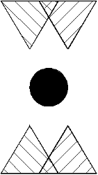

Triangle test is shown on picture 1. It can check if patient have binocular vision.
Parallax of triangles can be increased by pressing key ↑ or decreased by pressing key ↓. It makes possible to check occurrence of binocular vision for different angles of stereoscopy. After each test start, parallax is 10' (minutes af angle).
Distance between traingles x is calculated on the basics of distance from monitor l from following equation.
